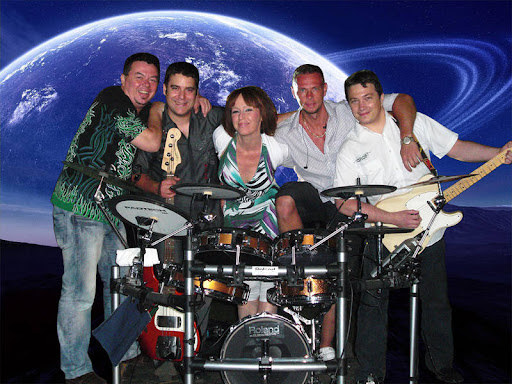

Home

Out of time
Storia
Gruppo italiano formatosi nel 2020, fondato da Simone Pinardi e Francesco Scorza.
Genere che spazia dal rock al funk e al metal, composto da la voce di Mattia Milito, le chitarre
di Gabriele Menga e Francesco Scorza, il basso di Simone Pinardi, la batteria di Mattias Mannocchia e
le tastiere di Manuel Monciatta.
Socials
Instagram : out_of_time_music
Email : outoftime856@gmail.com
Facebook : Out of time official
Youtube : Out of Time